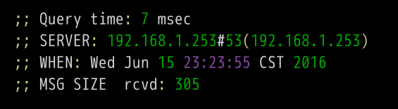
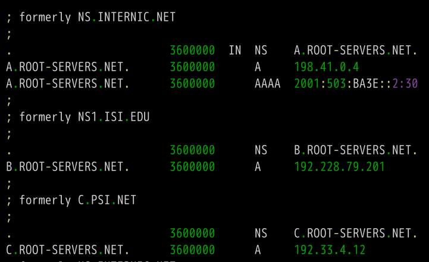

转自 阮一峰 的 DNS 原理入门。
DNS 是互联网核心协议之一。不管是上网浏览，还是编程开发，都需要了解一点它的知识。
本文详细介绍DNS的原理，以及如何运用工具软件观察它的运作。我的目标是，读完此文后，你就能完全理解DNS。
DNS 是什么？
DNS （Domain Name System 的缩写）的作用非常简单，就是根据域名查出IP地址。你可以把它想象成一本巨大的电话本。
举例来说，如果你要访问域名math.stackexchange.com，首先要通过DNS查出它的IP地址是151.101.129.69。
如果你不清楚为什么一定要查出IP地址，才能进行网络通信，建议先阅读我写的《互联网协议入门》。
查询过程
虽然只需要返回一个IP地址，但是DNS的查询过程非常复杂，分成多个步骤。
工具软件dig可以显示整个查询过程。
|
|
上面的命令会输出六段信息。
第一段是查询参数和统计。
第二段是查询内容。
上面结果表示，查询域名math.stackexchange.com的A记录，A是address的缩写。
第三段是DNS服务器的答复。
上面结果显示，math.stackexchange.com有四个A记录，即四个IP地址。600是TTL值（Time to live 的缩写），表示缓存时间，即600秒之内不用重新查询。
第四段显示stackexchange.com的NS记录（Name Server的缩写），即哪些服务器负责管理stackexchange.com的DNS记录。

上面结果显示stackexchange.com共有四条NS记录，即四个域名服务器，向其中任一台查询就能知道math.stackexchange.com的IP地址是什么。
第五段是上面四个域名服务器的IP地址，这是随着前一段一起返回的。

第六段是DNS服务器的一些传输信息。

上面结果显示，本机的DNS服务器是192.168.1.253，查询端口是53（DNS服务器的默认端口），以及回应长度是305字节。
如果不想看到这么多内容，可以使用+short参数。
|
|
上面命令只返回math.stackexchange.com对应的4个IP地址（即A记录）。
DNS服务器
下面我们根据前面这个例子，一步步还原，本机到底怎么得到域名math.stackexchange.com的IP地址。
首先，本机一定要知道DNS服务器的IP地址，否则上不了网。通过DNS服务器，才能知道某个域名的IP地址到底是什么。

DNS服务器的IP地址，有可能是动态的，每次上网时由网关分配，这叫做DHCP机制；也有可能是事先指定的固定地址。Linux系统里面，DNS服务器的IP地址保存在/etc/resolv.conf文件。
上例的DNS服务器是192.168.1.253，这是一个内网地址。有一些公网的DNS服务器，也可以使用，其中最有名的就是Google的8.8.8.8和Level 3的4.2.2.2。
本机只向自己的DNS服务器查询，dig命令有一个@参数，显示向其他DNS服务器查询的结果。
|
|
上面命令指定向DNS服务器4.2.2.2查询。
域名的层级
DNS服务器怎么会知道每个域名的IP地址呢？答案是分级查询。
请仔细看前面的例子，每个域名的尾部都多了一个点。
比如，域名math.stackexchange.com显示为math.stackexchange.com.。这不是疏忽，而是所有域名的尾部，实际上都有一个根域名。
举例来说，www.example.com真正的域名是www.example.com.root，简写为www.example.com.。因为，根域名.root对于所有域名都是一样的，所以平时是省略的。
根域名的下一级，叫做"顶级域名"（top-level domain，缩写为TLD），比如.com、.net；再下一级叫做"次级域名"（second-level domain，缩写为SLD），比如www.example.com里面的.example，这一级域名是用户可以注册的；再下一级是主机名（host），比如www.example.com里面的www，又称为"三级域名"，这是用户在自己的域里面为服务器分配的名称，是用户可以任意分配的。
总结一下，域名的层级结构如下。
|
|
根域名服务器
DNS服务器根据域名的层级，进行分级查询。
需要明确的是，每一级域名都有自己的NS记录，NS记录指向该级域名的域名服务器。这些服务器知道下一级域名的各种记录。
所谓"分级查询"，就是从根域名开始，依次查询每一级域名的NS记录，直到查到最终的IP地址，过程大致如下。
- 从"根域名服务器"查到"顶级域名服务器"的NS记录和A记录（IP地址）
- 从"顶级域名服务器"查到"次级域名服务器"的NS记录和A记录（IP地址）
- 从"次级域名服务器"查出"主机名"的IP地址
仔细看上面的过程，你可能发现了，没有提到DNS服务器怎么知道"根域名服务器"的IP地址。回答是"根域名服务器"的NS记录和IP地址一般是不会变化的，所以内置在DNS服务器里面。
下面是内置的根域名服务器IP地址的一个例子。

上面列表中，列出了根域名（.root）的三条NS记录A.ROOT-SERVERS.NET、B.ROOT-SERVERS.NET和C.ROOT-SERVERS.NET，以及它们的IP地址（即A记录）198.41.0.4、192.228.79.201、192.33.4.12。
另外，可以看到所有记录的TTL值是3600000秒，相当于1000小时。也就是说，每1000小时才查询一次根域名服务器的列表。
目前，世界上一共有十三组根域名服务器，从A.ROOT-SERVERS.NET一直到M.ROOT-SERVERS.NET。
分级查询的实例
dig命令的+trace参数可以显示DNS的整个分级查询过程。
|
|
上面命令的第一段列出根域名.的所有NS记录，即所有根域名服务器。
根据内置的根域名服务器IP地址，DNS服务器向所有这些IP地址发出查询请求，询问math.stackexchange.com的顶级域名服务器com.的NS记录。最先回复的根域名服务器将被缓存，以后只向这台服务器发请求。
接着是第二段。

上面结果显示.com域名的13条NS记录，同时返回的还有每一条记录对应的IP地址。
然后，DNS服务器向这些顶级域名服务器发出查询请求，询问math.stackexchange.com的次级域名stackexchange.com的NS记录。

上面结果显示stackexchange.com有四条NS记录，同时返回的还有每一条NS记录对应的IP地址。
然后，DNS服务器向上面这四台NS服务器查询math.stackexchange.com的主机名。

上面结果显示，math.stackexchange.com有4条A记录，即这四个IP地址都可以访问到网站。并且还显示，最先返回结果的NS服务器是ns-463.awsdns-57.com，IP地址为205.251.193.207。
NS 记录的查询
dig命令可以单独查看每一级域名的NS记录。
|
|
+short参数可以显示简化的结果。
|
|
DNS的记录类型
域名与IP之间的对应关系，称为"记录"（record）。根据使用场景，"记录"可以分成不同的类型（type），前面已经看到了有A记录和NS记录。
常见的DNS记录类型如下。
|
|
一般来说，为了服务的安全可靠，至少应该有两条NS记录，而A记录和MX记录也可以有多条，这样就提供了服务的冗余性，防止出现单点失败。
CNAME记录主要用于域名的内部跳转，为服务器配置提供灵活性，用户感知不到。举例来说，facebook.github.io这个域名就是一个CNAME记录。
|
|
上面结果显示，facebook.github.io的CNAME记录指向github.map.fastly.net。也就是说，用户查询facebook.github.io的时候，实际上返回的是github.map.fastly.net的IP地址。这样的好处是，变更服务器IP地址的时候，只要修改github.map.fastly.net这个域名就可以了，用户的facebook.github.io域名不用修改。
由于CNAME记录就是一个替换，所以域名一旦设置CNAME记录以后，就不能再设置其他记录了（比如A记录和MX记录），这是为了防止产生冲突。举例来说，foo.com指向bar.com，而两个域名各有自己的MX记录，如果两者不一致，就会产生问题。由于顶级域名通常要设置MX记录，所以一般不允许用户对顶级域名设置CNAME记录。PTR记录用于从IP地址反查域名。dig命令的-x参数用于查询PTR记录。
|
|
上面结果显示，192.30.252.153这台服务器的域名是pages.github.com。
逆向查询的一个应用，是可以防止垃圾邮件，即验证发送邮件的IP地址，是否真的有它所声称的域名。dig命令可以查看指定的记录类型。
|
|
其他DNS工具
除了dig，还有一些其他小工具也可以使用。
（1）host 命令
host命令可以看作dig命令的简化版本，返回当前请求域名的各种记录。
|
|
host命令也可以用于逆向查询，即从IP地址查询域名，等同于dig -x <ip>。
|
|
（2）nslookup 命令
nslookup命令用于互动式地查询域名记录。
|
|
（3）whois 命令
whois命令用来查看域名的注册情况。
|
|
参考链接
- DNS: The Good Parts, by Pete Keen
- DNS 101, by Mark McDonnell